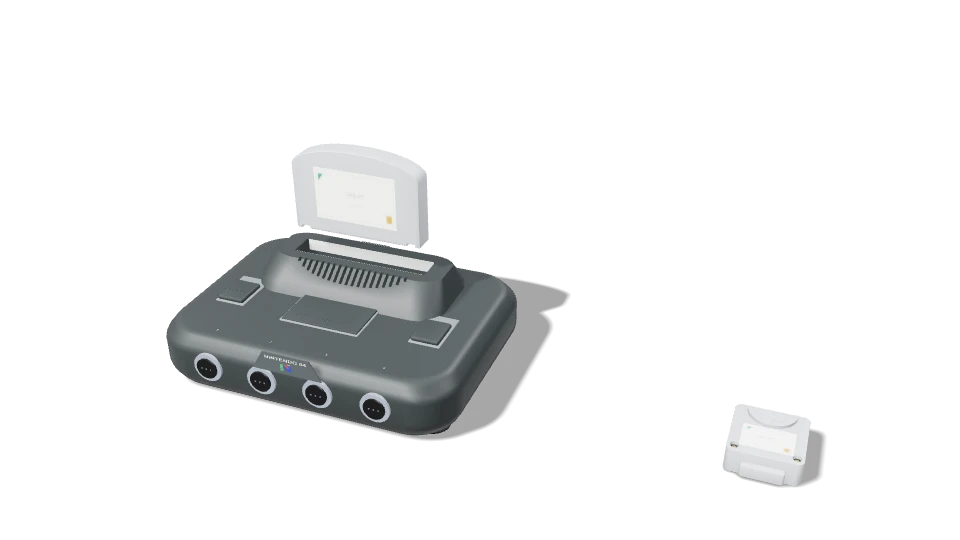

A COLLECTION WITH CHARACTER
Retro
Library.
Your collection.
Your choice of platform.
Choose what to install. Keep your progress.
Bring a little theatre to the way you play.

Cloud-hosted downloads. No website account.
Choose the operating system and architecture that match your device.
LINUX / QUICK START
One package.
The right architecture.
Download the x86_64 bundle for Intel or AMD desktop systems, or the aarch64 bundle for compatible ARM64 Linux devices.
With Flatpak installed, add Flathub if needed, then install the file you downloaded. Flatpak will identify the required runtime.
flatpak remote-add --user --if-not-exists flathub \
https://flathub.org/repo/flathub.flatpakrepo
flatpak install --user ./YOUR-DOWNLOADED-FILE.flatpak
flatpak run com.retrolibrary.RetroLibraryReplace YOUR-DOWNLOADED-FILE with the exact filename above.
BUILD DETAILS
Know what
you’re getting.
Original source addresses stay on the cloud service. The apps retain selected downloads, local installation and local removal.
Windows · v1.8.1
Unsigned Windows 10+ x64 installer. Use a separate protected-edition library folder; existing 1.8.0 libraries are retained.
SHA-256
2e2d101dfa467746f384b1beea6208048893e2f101b1c438f91ca01fa1421defAndroid · v1.0.1
Android 10+ ARM64 build, signed with the development certificate. Back up important saves before changing builds.
SHA-256
bee5b7680866e1a413db4b7455671c3b30fb2827a243619ac3b265e84df50402Linux desktop · v1.0.1
64-bit Intel / AMD Linux · Flatpak. Freedesktop Platform 25.08 is required; the bundle identifies its runtime source. Linux ARM64 requires a compatible Linux system and graphics stack.
GitHub download mirror ↗SHA-256
d16339a2ba5ab9806954ac5440879d5a57d1215640b941029e8eae6c8cd3d353Linux ARM64 · v1.0.1
64-bit ARM Linux · Flatpak · mobile preview. Freedesktop Platform 25.08 is required; the bundle identifies its runtime source. Linux ARM64 requires a compatible Linux system and graphics stack.
GitHub download mirror ↗SHA-256
fbd471fad137dd2bc78a5e10c393b6e328728443e550e1b2f656a0d0969deb22Linux builds passed static analysis, 804 automated checks and package-integrity checks. ARM64 compilation used emulation; physical-device testing remains ahead. Windows console recordings demonstrate the presentation system. Available game systems vary by platform.